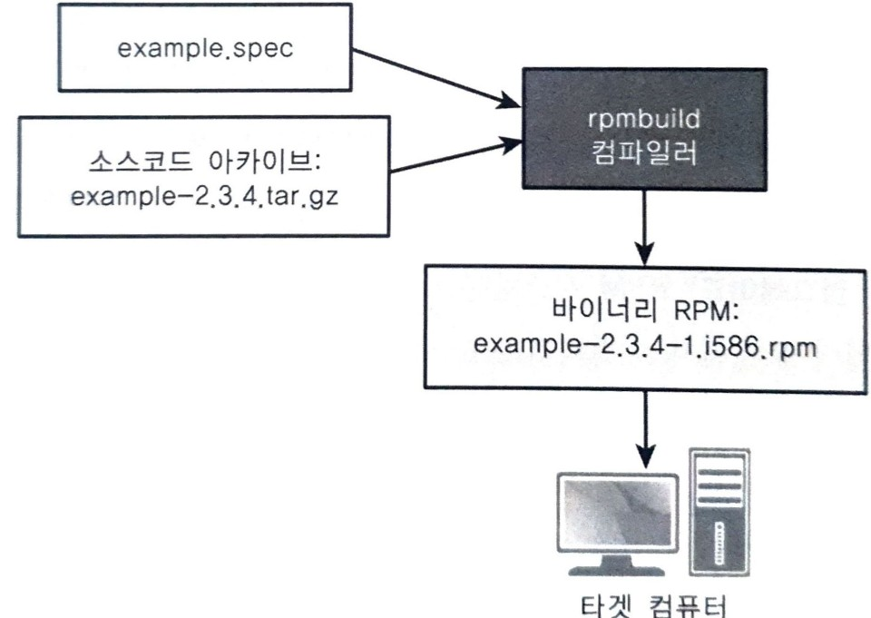

컴파일 <4> RPM 패키지
소프트웨어 패키징과 설치
- 빌드 프로세스의 마지막 단계는 릴리스 패키지 생성이다.
- 타겟 머신상에 설치할 파일의 완전한 집합을 포함해야 한다.
아카이브 파일
- zip, tar 과 같은 큰 파일을 묶는 프로그램
- 필요한 파일을 오브젝트 트리 밖으로 복사
- 임시 보관 디렉터리 보냄
- 디렉터리에 담긴 모든 내용을 아카이빙 툴을 이용해 하나의 파일로 패키징
- 하위 디렉터리 파일 위치 기록 됨
RPM 패키지 관리 포맷
- 실행 프로그램 바이너리 RPM 패키지 장점
- 컴파일 수행할 필요 없이 수 초 안에 소프트웨어 설치 가능
- 일관성 있는 메타 정보
- 각 RPM 파일은 패키지 이름, 패키지 버전, 생성 날짜, 작성자 이름과 이메일, 패키지 다운 URL, SW 사용권 계약 등을 README 혹은 일관된 필드에 맞춘 포맷을 저장해 외부 프로그램이 이를 활용할 수 있다.
- 내장 스크립트
- .zip .tar 와 달리 다양한 내장 스크립트를 포함한다.
- 종속성 검사
rpmbuild 프로세스
- 4개 파일 패키징하는 예제

- example.spec(RPM 명세 파일): 패키징되어야 하는 파일의 목록, 패키지 메타 정보, 설치 스크립트
- 소스코드 아카이브: tar.gz 파일로 제공되는 원본 소스코드 아카이브.
- 패키징 프로세스는 소스 파일을 추출, 필요한 실행 파일을 만들기 위해 빌드와 설치의 표준 절차를 따른다.
- example-2.3.4.tar.gz
- rpmbuild 도구가 RPM 파일 만듦
- example.spec 지시 사항을 읽어 제품 소스코드 구성
- 최종 실행 프로그램 빌드
- 메타 정보, 설치 스크립트를 RPM 파일에 넣는다.
- example-2.3.4-1.586.rpm
RPM 명세 파일(example.spec)의 예
rpmbuild 도구가 사용할 디렉터리 구조
- /usr/src/packages 안에 누구나 쓰기가 가능한 디렉터리가 있다.
$ ls -l /usr/src/packages/
total 20
drwxrwxrwt 4 root root 4096 2009-09-14 15:30 BUILD
drwxrwxrwt 9 root root 4096 2009-09-14 15:30 RPMS
drwxrwxrwt 2 root root 4096 2009-09-14 15:30 SOURCES
drwxrwxrwt 2 root root 4096 2009-09-14 15:30 SPECS
drwxrwxrwt 2 root root 4096 2009-09-14 15:30 SRPMS
- BUILD
rpmbuild가 원본 소스코드 아카이브(example-2.3.4.tar.gz)를 컴파일하며 생성한 소스코드와 오브젝트 트리 저장하는 곳
- RPMS
- 이 디렉터리는 최종 출력 파일인 example-2.3.4-1.586.rpm이 위치하는 디렉터리
- SOURCES
- 원본 소스코드 아카이브(example-2.3.4.tar.gz)는
rpmbuild가 찾을 수 있게 반드시 이 디렉터리에 저장되어야 한다.
- 원본 소스코드 아카이브(example-2.3.4.tar.gz)는
- SPECS
- example.spec 구성 파일은 이 디렉터리에 저장된다.
- SRPMS
- RPMS 디렉터리와 유사하지만, 바이너리 RPM 파일 대신 소스 RPM 파일을 저장하는 데 사용된다는 점이 다르다.
- Name: 이 패키지를 고유하게 설명 식별자
- Version: 이 소프트웨어의 릴리즈 버전
- Release: 릴리즈 버전 식별. 같은 Version이라도 Release 버전이 다르게 배포할 수 있음
- Group: 최종 사용자가 GUI 도구를 통해 SW를 설치하면 SW의 그룹 필드는 이 SW가 어떤 항목 안에 나타나야 하는지에 관한 정보를 제공한다. 이 파일에서는 RPM이 발행 애플리케이션(publishing application)으로 분류되어야 한다고 요청하고 있다.
- Vendor, URL, Packager: 어떤 단체가 패키지를 만들었는지, 어디서 다운로드할 수 있는지, 누가 패키징을 했는지 세부 정보 제공. 시스템에 이미 설치된 패키지에 관한 정보를 찾아볼 때 유용
- Summary: 이 필드는 패키지 안의 소프트웨어에 관한 간략한 설명을 제공한다. 보통 GUI 도구가 소프트웨어에 관한 한 줄의 개요를 표시하는 데 사용된다. 더 자세한 정보는 여러 줄의 텍스트를 담을 수 있는 %description 절을 사용할 수 있다.
- License: 라이선스 표시
- Source: SOURCES 디렉터리 안에 위치해야 하는, 소스코드의 타르볼tar-ball 파일이름
12 Source: %{name}-%{version}.tar.gz - Buildroot: rpmbuild에 프로그램의 실행 파일이 설치되야하는 위치를 알려준다. 소스코드의 압축을 풀고 컴파일하는 BUILD 디렉터리와는 다르다. 빌드 루트build root가 타겟 머신상의 설치 디렉터리를 미러링하는 임시 보관 디렉터리
15 Buildroot: %{_tmppath}/%{name}-%{version}-buildroot- 컴파일된 프로그램을 빌드 머신상의 /usr/bin에 설치하는 대신, 이를 /tmp/example-2.3.4-buildroot/usr/bin에 위치시킨다. 아카이브에 포함될 모든 파일을 모으기 쉬운 위치를 선택해서 타겟 머신에 설치할 준비를 하는 편이 더 편하다.
- Requires: example 패키지를 설치하기 위해 glibc 패키지가 반드시 필요함을 나타낸다.
16 Requires: glibc > 2.6 - %description: 패키지에 관한 임의의 텍스트 기반 설명을 기재
- %prep: 소프트웨어의 소스코드 트리를 준비하기 위한 명령의 목록 제공
타르볼의 압축을 풀어 소스코드를 가져오기 위해 표준 동작을 사용하고 빌드가 BUILD 하위 디렉터리에서 이뤄지기 때문에, 기본 제공 명령인 %setup -q를 사용해 파일을 추출할 수 있다.25 %prep 26 %setup -q - %build: 소스코드를 컴파일해 실행 프로그램을 만드는 셸 명령을 제공한다.
이 예제에서는 이미 만들어진 makefile을 사용한다.
두 개의 다른 빌드 시스템을 따로 사용하는 상황은 별다른 의미가 없어 rpmbuild를 통해 기존 시스템을 호출하는 방법이 최선28 %build 31 make - %install: 소프트웨어를 설치하는 명령을 제공한다.
하지만 실행 프로그램을 빌드 머신에 설치하지 않고, 대신 $RPM_BUILD_ROOT가 나타내는 임시 보관 디렉터리에 설치한다.34 %install 36 make install PREFIX=$RPM_BUILD_ROOT- 기존 make install 빌드 타겟을 재사용해 타겟 머신이 요청한 디렉터리 구조로 정확히 SW를 위치시킨다.
여기서도 필요한 출력 파일을 설치되기만 한다면 어떤 식으로든 셸 명령을 나열할 수 있다.
- 기존 make install 빌드 타겟을 재사용해 타겟 머신이 요청한 디렉터리 구조로 정확히 SW를 위치시킨다.
- 여기 이후로는 RPM 아카이브로 패키징할 모든 파일 나열
39 %files 43 %attr(0750,root,root) /usr/bin/example 44 %attr(0755,root,root) /usr/lib/libexample.so.1 45 %attr(0755,root,root) /usr/lib/libhelper.so.4 46 %attr(0644,root,root) %doc /usr/share/doc/manual/example.pdf- 파일의 접근 제어 정보(권한 비트, 파일 소유자, 파일 그룹) 지정
- %doc 지시어, 어떤 설치 파일이 단순한 문서인지(무시 가능한) 구분
- 정리
48 %clean 49 rm -r $RPM_BUILD_ROOT%pre: 파일을 설치하기 전에 실행하는 셸 스크립트
%post: 파일을 설치한 후에 실행하는 셸 스크립트
%preun: 파일을 시스템에서 제거하기 전에 실행하는 셸 스크립트
%postun: 파일을 시스템에서 제거한 후에 실행하는 셸 스크립트50 %post 51 groupadd exgroup 52 chgrp exgroup /usr/bin/example 54 %preun 55 groupdel exgroup - 새로운 유닉스 그룹(exgroup)을 추가하는 설치 후 스크립트를 포함하고 있다.
- 이 그룹의 구성원만이 /usr/bin/example 프로그램을 실행할 수 있게 제한한다.
명세 파일로 부터 RPM 파일 작성
- example.spec을 입력으로 사용해 rpmbuild 명령을 실행한 결과를 나타낸다.
- 소스코드를 BUILD 디렉터리로 추출하는 gzip 명령 확인
- 마지막 부분에 rpmbuild 도구가 소스코드를 컴파일할 때 사용하게 지정했던 make 명령을 찾을 수 있다.
$ rpmbuild -bb example.spec
Executing(%prep): /bin/sh -e /var/tmp/rpm-tmp.68587
+ umask 022
+ cd /usr/src/packages/BUILD
+ cd /usr/src/packages/BUILD
+ rm -rf example-2.3.4
+ /usr/bin/gzip -dc /usr/src/packages/SOURCES/example-2.3.4.tar.gz
+ tar -xf -
+ STATUS=0
+ '[' 0 -ne 0 ']'
+ cd example-2.3.4
++ /usr/bin/id -u
+ '[' 1000 = 0 ']'
++ /usr/bin/id -u
+ '[' 1000 = 0 ']'
+ /bin/chmod -Rf a+rX,u+w,g-w,o-w .
+ exit 0
Executing(%build): /bin/sh -e /var/tmp/rpm-tmp.68587
+ umask 022
+ cd /usr/src/packages/BUILD
+ /bin/rm -rf /var/tmp/example-2.3.4-buildroot
++ dirname /var/tmp/example-2.3.4-buildroot
+ /bin/mkdir -p /var/tmp
+ /bin/mkdir /var/tmp/example-2.3.4-buildroot
+ cd example-2.3.4
+ make
Building all example code.
... Remaining output truncated ...
모든 사항이 올바르게 동작했는지 다시 한 번 확인하기 위해 RPMS 하위 디렉터리에서 RPM 파일을 찾아봐야 한다.
$ cd /usr/src/packages/RPMS/i586
$ ls -l
total 4
-rw-r--r-- 1 psmith users 2706 2009-09-14 15:16 example-2.3.4-1.i586.rpm
- 이 도구를 통해 example.spec 파일에 명시적으로 나열되지 않은 파일이 빌드 루트 디렉터리에 설치되었는지 확인 할 수 있다.
- 이런 에러를 잡으면 하나 이상의 중요한 파일이 빠진 소프트웨어를 릴리스하는 실수를 피할 수 있다.
- 다음은 에러 메시지를 보여준다.
$ rpmbuild -bb example.spec
...
Checking for unpackaged file(s): /usr/lib/rpm/check-files /var/tmp/example-2.3.4-buildroot
error: Installed (but unpackaged) file(s) found:
/usr/lib/libhelper.so.4
RPM build errors:
Installed (but unpackaged) file(s) found:
/usr/lib/libhelper.so.4
RPM 예제 설치
- RPM 파일은 지정된 OS와 CPU타입을 대상으로 하므로 어렵지 않게 RPM파일을 타겟 머신에 설치할 수 있다.
- RPM 패키지의 내용을 살펴본다.
-q: RPM 파일의 내용 질의-i: 모든 메타 정보 확인$ rpm -q -p -i example-2.3.4-1.1586.rpm Name : example Relocations: (not relocatable) Version : 2.3.4 Vendor: Arapiki Solutions, Inc. Release : 1 Build Date: Mon 14 Sep 2009 03:16:06 PM Install Date: (not installed) Build Host: linux Group : Applications/Publishing Source RPM: example-2.3.4-1.src.rpm Size : 12 License: Exampleware Signature : (none) Packager : Peter Smith psmith@arapiki.com URL: http://www.arapiki.com Summary : This is an example program to show how RPMS work. Description : This is an example program that demonstrates how RPMS work... ... prerequsite packages are already installed. Distribution: (none)-l: 아카이브 내의 파일 목록 확인$ rpm -q -p -l example-2.3.4-1.i586.rpm /usr/bin/example /usr/lib/libexample.so.1 /usr/lib/libhelper.so.4 /usr/share/doc/manual/example.pdf
- RPM 설치
-i: 이 옵션과 함께 rpm명령을 내리면 패키지 설치$ sudo -s # rpm -i example-2.3.4-1.i586.rpm이 명령 실행 후 아무 내용도 출력되지 않으면, 잘 완료된 것
- RPM 설치된 패키지 보이기
-q: RPM 파일의 내용 질의-a: 현재 시스템에 설치된 모든 패키지 보여라.$ sudo -s # rpm -qa | grep example example-2.3.4-1
- RPM 패키지 삭제
-e: 설치된 모든 파일을 시스템에서 제거하고, 설치 제거 스크립트는 exgroup을 유닉스 그룹에서 삭제한다.$ sudo -s # rpm -e example-2.3.4아무 내용도 출력되지 않으면, 잘 완료된 것